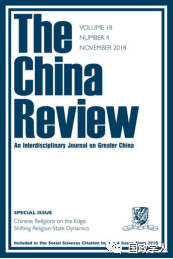
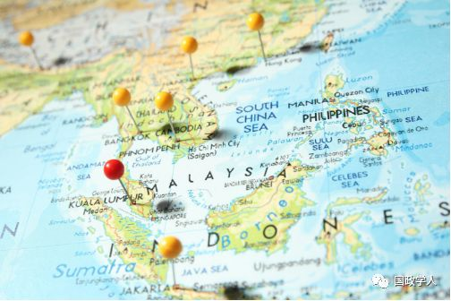
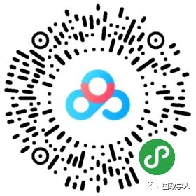

收录于合集

简 介
【作者】 利安德·西阿是美国斯泰森大学历史学副教授，曾担任该大学亚洲研究项目的创始主任。
【编译】 汪琪茜 ****
【校对】 陈成龙 高嘉琳
【来源】 The China Review， Vol。17， No。3 (October 2017)， 87–110
【期刊】 China Review,是（香港）中文大学出版社自1990年以来的年度出版物。自2001年以来，每年4月和10月出版两期学术期刊，涵盖大中华区及其人民的各个研究领域，即国内政治和国际关系；社会、商业和经济发展；现代史、艺术和文化研究。这是唯一一本以中国为基地的英文期刊，致力于大中华区的研究。

本土化与全球化下的华人认同：南洋学会、新加坡华人知识分子与东南亚研究
Chinese Identities between Localization and Globalization： The South Seas Society， Chinese Intellectuals in Singapore， and Southeast Asian Studies
核心观点
1940年，一些进行南洋研究（今东南亚）的中国学者创立了南洋学会，该学会在东亚和东南亚部分地区的中国知识分子中享受盛誉。 本文认为，在研究 1958-1971新加坡- 马来西亚社会历史方面，该学会是一个有益的案例，且分析这一时期南洋学会的本土化和全球化进程，可以为新加坡华人知识分子、华人社区和移民、华人身份认同以及东南亚研究的全球发展等更广泛的话题提供新的视角。迄今为止，大多数关于华人在世界各地迁徙和华人身份形成的学术著作，都聚焦于商业网络和经济活动，其他一些问题，比如华人知识分子和学术组织，仍然相对缺乏探索。 因此，研究南洋学会的历史有助于更深入地探索以前未得到充分研究的与 华人移民和华人身份 有关的话题。 ****
本文主体由四部分组成。第一部分通过回顾南洋学会自 1940年成立到1958年的历史，为本文的背景。文章第二部分则讲述了以南洋为中心的社会历史阶段的转变，“本土化”概念的出现并逐渐取代了“整体身份认同”。（“本土化”意味着由南洋不再是一个整体概念，而是特指新加坡- 马来西亚构成的东南亚部分。在1958-1971年，新加坡和马来亚被认为是一个单一的实体，是南洋学会学者们首次提出“新马”的概念。）本文接下来的两部分关注南洋大学在全球东南亚研究中的地位，同时进一步阐明了南洋在本土化与全球化之间的社会定位问题。

1
1940 年至1958年南洋社会概览
南洋学会的起源可以追溯到 1927年南洋学堂的诞生。 **中国传统南洋文化始于 1927年9月27日建立的暨南大学，**暨南大学建立的主要目的是教育中国移民和他们的后代，而在学会的中国学者们负责建立起相关教育体系。这些学者从中国大陆的角度研究南洋问题（今东南亚），认为南洋是中国的“南大洋”，并通过不同的方式分享了他们的研究成果，出版了包括《学会杂志》、《南洋研究》等内容。然而，1937年第二次中日战争的爆发给暨南大学、南洋学会和南洋研究带来了巨大的影响。暨南校区不得不从上海郊区搬迁到上海的国际定居点，然后在1941年又搬迁到了福建省的建阳。从1937年起，学会活动被迫中断近一年。所有的这一切都导致了 南洋研究的认知中心从中国转移到了南洋岛上。 ****
南洋研究的新焦点是新加坡的南洋学会 。 **** 创立学会的学者们虽然没有否定与以中国为中心的南洋研究传统的联系，但研究中心发生了变化，选择以南洋为中心，而不是中国。 ****学会于 1940年首次出版其旗舰刊物《南洋学会杂志》。这是南洋学会第一本专门研究该地区的学术期刊，也可能是研究南洋最古老的中文学术期刊。学会中后期固定在在新加坡的活动，1946年，学会决定将永久定居在新加坡。次年，（1947年）又决定邀请非中国学者作为荣誉会员加入该组织。
最初，八位学者共同创立了南洋社会，但从战后直到1958年，只有许云樵一位学者主导了南洋学会的活动，他成为学会的事实上的领导人，他大多数同事已经回到中国。在他的管理经营下，学会的学术成果仍在不断发展，许得以主导该组织活动的方向。
2
领导和方向的变化
直到1958年许云樵被撤职之前，他一直是南洋学会的推动力。然而，学会内部权力斗争导致陈育松成为学会事实上的领导人。该事件标志着南洋作为整体研究历史的结束，预示着“新马”结构研究阶段的开始。 新时期学会研究以 “本土化”为主，其重点在于研究如何适应非殖民化和不断变化的地方环境。 与此同时，整个社会也受到全球化力量的影响，因此，分析一下学会在 1958-1971 这一时期的领导和方向的变化，就可以了解华人的身份认同，以及华人社区和移民问题。 ****
需要提及的是，在这一时期，中国境外的许多中国人选择了进行 “本土化”改造以适应前西方殖民地的非殖民化和地方环境。这种现象的产生并不是单一直接的，他的影响因素是多方面的。 但是 “让社会纯粹本土化”的理念，不仅背离了 ****
在冷战政治的大背景，也背离了以中国为中心的大前提，是一种否定中国特色的做法。 ****“ 本地化”，其定义不再是南洋问题，而是变成了新加坡- 马来西亚问题。为什么会产生这样的变化？ 有人认为，当时的新加坡和马来西亚还处于英国殖民的阴影之下，考虑到英国殖民当局的反共立场，当 1949年中国共产党取得了胜利后，南洋学会无法再与中国大陆保持如此紧密的联系。 ****
为了 “适应新加坡和马来亚的情况”1962年10月16日有人提出修改学会的英文和中文名称，。他们建议将该组织的名称改为“马来西亚学术会”。后来，新加坡在1965年8月9日实现完全独立，也对南洋学会的名称产生了影响。从1965年起，学会正式更名为“新加坡- 马来西亚学会”，加上了“新加坡”一词。这样举措被认为一种适应现状的方法。这种种变化都说明一种新加坡- 马来西亚特征正在形成，而这种特征部分是由于本土化所造成的，还有一部分来源于全球化的力量。1958年8月30日，就在“中国”一词从南洋学会的中文名称中被删除的一个星期后，一个新的JSSS（The Journal of South Seas Society）编辑委员会成立了，继任者王刚武试图通过此举将学会引向全球化。
王的全球目标推动他改造JSSS，“如果它(JSSS)纯粹是一份中国期刊，他不会感兴趣”，这就意味着JSSS有必要接触到更广泛的、更全球化的读者。因此，王想要彻底改革该期刊。例如，改变只重视中文学术的现象，使其真正做到中英双语。然而，出版一本两种语言的杂志并不是一件容易的事。但王采取了一种杂糅的方式—— 出版更多数量的英语文章并实现中英双语以及纳入了对新加坡和马来亚华人群体文学追求的研究。 此举使得 JSSS 学术质量更高也更国际化，更加全面也更加适应新加坡-马来亚框架。 ****此外，从 1958年起，新加坡和马来亚的华人社会和政治话题成为JSSS报道主要对象，例如讨论马来亚和新加坡华人对中国政治发展的反应。
但遗憾的是，JSSS的全球化实施过程太短。1959年，由于王的工作负担越来越重，他不得不辞去这个职位，JSSS全球化进程停滞。鉴于他的能力、背景和将JSSS转变为世界级期刊的最初决心，人们猜测，如果王刚武能多在任一段时间，他会取得更多的成就。但事实是，王刚武并没有实现JSSS全球化，主要语言媒介还是中文。
3 ** 与南洋大学的联系**
在南洋大学成立之前，很多境外华人到中国接受高等教育。但是随着1949年共产主义者在中国大陆取得胜利，去大陆接受教育变得不再实际，尤其是在明令禁止返回马来西亚和新加坡的情况下。 与此同时， 马来西亚 和新加坡的华人 社区对高等教育的需求日益增加。 ****尽管有马来西亚大学这样类似的学校，但许多中国学生无法满足大学入学要求。因此，人们认为需要建立一所新的大学，以便让具有高等教育愿望的中国人实现社会流动。此外，英国殖民当局在马来亚和新加坡的教育政策受到英国人担心共产主义在华文学校和华人社区蔓延的影响，这一事实意味着这些政策因此被许多华人视为威胁到了汉语母语教育与中国文化。 1956年3月16日南洋大学应运而生。之所以选择“南洋”作为大学的名字，正是由于这个术语原来是以中国为中心，反映了保护中国文化的目标。选择“南洋”二字，还在于它意指整个东南亚地区，对于该地区来说就有了一个一致的涵义。但南大的建立并不仅仅是为了新加坡的中国人，也是为了马来西亚的中国人。由此可见南大的创建者们主张的是“本土化”即“新马化”，意在实现“多元化下的统一”。
这所高等教育机构培养很多知识分子，他们毕业后 加入了南洋学会 ，因此，通过研究学会与南大的联系，就可以进一步了解新加坡的中国知识分子。 ****从南大毕业的这些人经常被形容为 “受过中国教育”，表明这些人的大学是中国人创立的，以汉语为主要教学语言，并提供汉语母语育。“中国教育”这个词，也被用于形容其他在新加坡的中国知识分子。事实上，用“中国教育”来形容这些人太过轻率，尽管他们所受到的中国教育很大一部分来自于南洋学会的许云樵教授和以汉语为主的JSSS。正如前文所述， JSSS 和南大建立的理念都基于“本土化概念”，因此当南大毕业生融入当地社会之后无形中为“新马”身份赢得了更多认同。 随着这些人走向国际，成为世界性的学者，他们通过他们的学术作品使得 “ 南洋学会”逐步融入了全球东南亚研究体系。
**4
**
东南亚研究全球化
在二战后的几十年里，东南亚研究开始向全球扩展。20世纪50年代和60年代在美国兴起了东南亚多学科领域研究，很明显，这是冷战地缘政治和美国追求其国家利益的产物。 福特基金会、洛克菲勒基金会和卡内基公司等私人基金会，以及社会科学研究理事会等学术组织，在这些领域的发展中发挥了关键作用。 ****
美国耶鲁大学和康奈尔大学先后开展东南亚地区的研究项目，分别获得了卡内基公司和洛克菲勒公司的资助。项目研究主要涵盖了地区社会、文化、民族等多个方面，来两校也致力于培养这方面的专家。此外，在接下来的几年内，在泰国曼谷和澳大利亚墨尔本分别建了的东南亚研究中心。而在日本，京都大学经过四年的筹备工作，于 1965年建立了一个东南亚研究中心。至此，南洋社会成为全球东南亚研究的一部分。分析东南亚社会发展路径为研究东南亚历史提供新的思路。
南洋社会之所以能够融入东南亚研究的全球体系很大一部分原因是由于JSSS在全球的学术声誉。到1964年，JSSS的订阅者不仅包括东亚的相应研究机构，伦敦大学、耶鲁大学、伯克利等大学都有订阅，可以说，JSSS的读者遍及全球。1958年以来JSSS中的两个关键主题是新加坡和马来西亚的华人社会和政治，以及同一地理区域的中国语言和文学，1958年至1997扩展为两类，第一类是东南亚的中国人和东南亚研究的其他方面，第二类除了中国社会和政治之外，还包括中国文学。
5 结 论
到1971年，南洋学会的历史开始出现一个新的阶段， 即从 1971年起，南洋学会强调再中国化，回归到了中国南洋研究的传统道路上。 ****然而，从学会的活动中可以明显看出， 1958-1971年间， 学会已经成为了继承南洋研究传统兼具 “新马”身份认同特色的学术实体，是地方化和全球化促使学会转型。 正如本文所指出的，分析这种地方化和全球化的力量如何影响学会，为新加坡的华人知识分子、华人社区和移民、华人身份以及东南亚研究的跨学科领域的发展等更广泛的主题提供了新的启示。
本文由国政学人微信公众平台独家首发
** 扫描下方小程序码查看原文p df**

更多阅读
【最新评论】江忆恩：不稳定的基础：特朗普对华政策的“知识结构”——对《百年马拉松》的评论 | 国政学人
【地区秩序】阿米塔夫·阿查亚：权力转移还是范式变化？中国崛起与亚洲新兴安全秩序 | 国政学人
【历史分析】为什么美国会在2003年发动伊拉克战争？| 国政学人
国政学人 （ID：guozhengxueren)
为方便学人及时阅读高质量文章
别忘把国政学人设置 星标 哦~